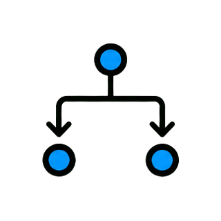
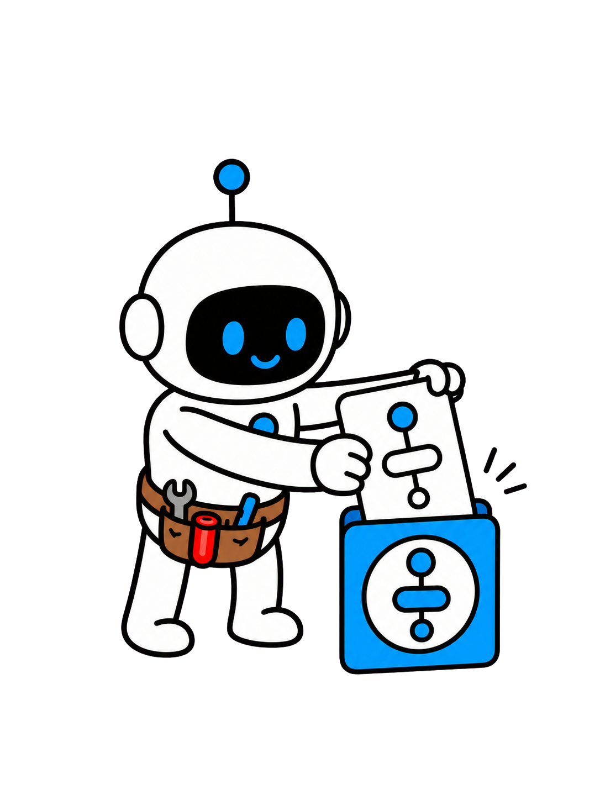
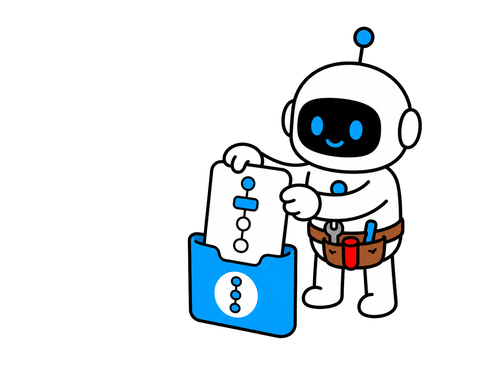

把好方法变成可复用 Skill


把好方法变成可复用 Skill
把好方法变成可复用 Skill
OpenAI：Skill 让工作流可复用


反复准备会消耗注意力

反复准备会消耗注意力
七字段 AI Agent Skill 模板

七字段 AI Agent Skill 模板
高价值内容，先收藏再实践

先收藏

把可复用方法留给下一次工作把判断留给真正的新问题
第 2 章
找到重复点
先从会反复出现的工作开始，而不是从一篇希望别人阅读的说明文开始。

从明确触发条件开始
从明确触发条件开始

从明确触发条件开始

从明确触发条件开始
稳定目标才有复用价值

≠

稳定目标才有复用价值
稳定目标才有复用价值

稳定目标才有复用价值
复制提示词不等于 Skill

复制提示词不等于 Skill
写清什么时候用

写清什么时候用
1.从重复工作开始
2.先写清触发条件
3.探索不必强行固化
1.从重复工作开始
2.先写清触发条件
3.探索不必强行固化
1.从重复工作开始
2.先写清触发条件
3.探索不必强行固化
第 3 章
保留有效上下文
Skill 只带回会改变判断的上下文，不把上个项目的一切细节重新塞进来。

只保留会改变判断的上下文


只保留会改变判断的上下文
只保留会改变判断的上下文
只保留会改变判断的上下文
只保留会改变判断的上下文
资源跟着判断出现
资源跟着判断出现
资源跟着判断出现

资源跟着判断出现
把谨慎变成可检查约束
≠

把谨慎变成可检查约束
记忆保存，Skill 指挥工作
记忆保存，Skill 指挥工作
1.列出有效输入
2.写出明确约束
3.资源按需出现
1.列出有效输入
2.写出明确约束
3.资源按需出现
1.列出有效输入
2.写出明确约束
3.资源按需出现
第 4 章
写下关键判断
Skill 的核心是一组别人能够检查和质疑的判断步骤，而不是一段看起来专业的长文本。
写判断，不写流程表演
≠
写判断，不写流程表演
写判断，不写流程表演
写判断，不写流程表演
每一步都要改变状态
每一步都要改变状态
每一步都要改变状态

每一步都要改变状态
每一步都要改变状态
只为关键差异设置分支
只为关键差异设置分支

自信不能代替证据
自信不能代替证据
1.分开目标与方法
2.暴露关键选择
3.风险判断要有证据
1.分开目标与方法
2.暴露关键选择
3.风险判断要有证据
1.分开目标与方法
2.暴露关键选择
3.风险判断要有证据
第 5 章
定义交接结果
可复用流程应该交出别人能检查、编辑和继续推进的结果。
定义可检查的交接
定义可检查的交接
定义可检查的交接
定义可检查的交接
让未知项一眼可见
让未知项一眼可见
让未知项一眼可见
让未知项一眼可见
检查要对应实际任务
检查要对应实际任务
把质量变得可检查
把质量变得可检查
1.先定义交付契约
2.把未知项放到台面上
3.检查要贴合任务
1.先定义交付契约
2.把未知项放到台面上
3.检查要贴合任务
1.先定义交付契约
2.把未知项放到台面上
3.检查要贴合任务
第 6 章
按证据更新
Skill 是持续维护的资产，应根据失败模式更新，而不是每次顺利完成后随心改写。

失败推动 Skill 修订
失败推动 Skill 修订
失败推动 Skill 修订
失败推动 Skill 修订
失败推动 Skill 修订
小 Skill 更容易组合
小 Skill 更容易组合
小 Skill 更容易组合
小 Skill 更容易组合
在新工作中验证
≠
在新工作中验证
让共享契约保持精简
让共享契约保持精简
1.失败是修订证据
2.保持 Skill 小而清晰
3.用新任务复测
1.失败是修订证据
2.保持 Skill 小而清晰
3.用新任务复测
1.失败是修订证据
2.保持 Skill 小而清晰
3.用新任务复测
捕捉、指挥、检查、更新
捕捉、指挥、检查、更新
把成功变成工作方法
≠

把成功变成工作方法
从小任务开始，用证据修订
从小任务开始，用证据修订
OpenAI 将 skill 解释为面向特定任务、
可以复用和分享的工作流。
它可以包含名称、说明、操作步骤和支持资源，
让下一次工作不必从空白对话重新开始。
常见损失是，你刚做出一份不错的研究简报、项目交接或分析，
又得在下周重新说明目标、边界、格式和检查方式。
真正的工作还没有开始，标准已经变得不一致。
这期我们做一张 AI Agent Skill 模板，
只有七个字段：触发条件、输入、工作流、输出契约、护栏、
证据和修订记录。
它足够轻，能被使用；也足够清楚，能被检查。
视频全程干货高价值，让你成为更擅长使用 AI 的人，
内容较长，点点关注收藏不迷路。
先从会反复出现的工作开始，
而不是从一篇希望别人阅读的说明文开始。
先找一个有明确起点的重复任务。
比如每周有新的客户记录和产品数据进来，
需要形成一份支持决策的更新。
Skill 要写出这个触发条件，而不是笼统地说生成总结。
可复用任务的目标是稳定的，哪怕材料每次不同。
如果目标、读者和成功标准次次变化，你拥有的仍是探索，
而不是已经可以打包的工作流。
不要把经常复制的提示词误当成 Skill。
只有同样的判断、检查和交付形态在多次真实工作里反复出现，
这段经验才值得被固化。
触发条件可以写得很朴素：
当新证据需要被整理成支持决策的更新时，使用这个 Skill。
这句话能避免把一个好方法误用到相近但不同的任务上。
本章小节。
第一，Skill 要解决的是重复工作。
第二，触发条件要说明何时使用。
第三，一次探索可以继续留在对话里。
Skill 只带回会改变判断的上下文，
不把上个项目的一切细节重新塞进来。
接着列出会改变答案的输入。
源材料、目标读者、截止时间、授权术语和已有决策可能都重要。
上次项目里只是好看的示例，通常并不值得一直带着。
资源最好出现在需要它的步骤旁。
研究 Skill 可以在取证时给出来源标准，
在整理交付时再给出模板。
这样资源是工作的一部分，而不是一堆没人打开的附件。
护栏要写成可观察的约束。
不要只写小心一点，而要说明哪些事实不能编造、哪份记录最可信、
哪类动作必须确认，以及未知情况应该怎样向审阅者展示。
这也是 Skill 和记忆的区别。
记忆可以保留一个偏好或旧事实，
Skill 则规定要取回什么上下文、怎样使用它，
以及发生冲突时下一步该怎么做。
本章小节。
第一，输入说明 Agent 可以依赖什么。
第二，约束说明它必须保护什么。
第三，资源应放在真正需要它的步骤旁。
Skill 的核心是一组别人能够检查和质疑的判断步骤，
而不是一段看起来专业的长文本。
然后把工作流写成少量判断步骤。
先明确目标，检查输入，识别缺口，选择方法，产出草稿，
再核验承诺的结果。
每一步都应该让工作状态发生一次可说明的变化。
如果一个步骤只是重复上一句已经要求的事，就删掉它。
如果它改变了证据、选择或交接方式，就把这种变化写清楚。
短流程不等于浅，关键是每一步都有作用。
分支不要写得太多。
一个有用的分支是：来源不完整时，先索取缺失记录，
并把草稿标记为待确认。
它不需要假装提前预测所有可能发生的例外。
风险高的判断一定要有证据动作。
Agent 可以列出记录、展示计算、标明假设，
或者请求人来决定。
语气再肯定，也不能替代验证。
本章小节。
第一，先区分目标和实现方法。
第二，只有真实选择才需要分支。
第三，高风险判断要留下证据。
可复用流程应该交出别人能检查、编辑和继续推进的结果。
一个 Skill 的结尾是交接契约。
提前说明读者、格式、必填字段和它要支持的决定。
这样审阅者不需要倒推原始提示词，
也能判断这次结果有没有完成任务。
同时写出未知项规则。
缺来源、记录冲突，或者选择取决于人的偏好时，
结果都应该直接标出来，不要把它们藏在一段流畅的文字里。
最后检查必须贴合工作。
发布说明要核事实和链接，客户沟通要核读者和权限，
计划要核负责人、下一步和未决问题。
不同任务不该共享一份空泛的完成检查。
这也是 Skill 可以分享的原因。
另一个同事不必猜你的私人直觉，他能查看输入、判断步骤、
输出契约和证据，再决定是否接受这次交付。
本章小节。
第一，执行前先定义交付格式。
第二，未知项要显式展示。
第三，最后检查必须贴合任务。
Skill 是持续维护的资产，应根据失败模式更新，
而不是每次顺利完成后随心改写。
不要在第一次成功后冻结 Skill。
应该记录真正促成修订的失败：缺少输入、默认值误导、字段不够、
或者看似安心的检查漏掉了关键错误。
尽量保持单元小。
一个 Skill 收集证据，另一个把证据整理成决策简报，
第三个进行发布检查。
小 Skill 更容易理解、测试，
也更容易在新任务里重新组合。
修订后要拿到新任务上复测。
只回放当初启发你的那个案例，只能证明你记住了过去。
新输入才能暴露这份工作契约是否真的带出了正确的判断。
当 Skill 变得太长时，问一问哪些内容是真正共享的，
哪些应该放进资源、模板或另一个专门的 Skill。
目标是可靠指导，不是保存每一次历史教训。
本章小节。
第一，用真实失败推动修订。
第二，小 Skill 更容易组合。
第三，要用新任务重新验证。
现在把模板串起来：捕捉真实重复任务，命名触发条件，
带入会改变判断的上下文，写下关键步骤，定义交接结果，
再用新任务检查它是否仍然可靠。
这样，
AI Agent 就不再只是重复你上一次写得最好的提示词，
而是开始使用一套持续维护的工作方法。
它不会因此绝对正确，但会更容易被检查、改进和复用。
这周就挑一个小而重复的任务试试。
用一句话写下触发条件，只放入会改变决定的材料，
指定一个审阅者真的能执行的检查，
再明确一个 Agent 不该用流畅语言掩盖的未知项。
第二次使用顺利，就保留它；如果失败，就只修改真正失败的字段。
关注 Tiny Agent，成为更擅长使用 AI 的人！
怎么写好
AI Agent Skill
才真正
可复用？


关注 Tiny Agent
成为更擅长使用 AI 的人！